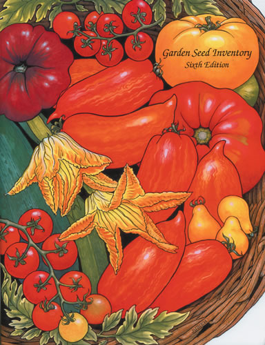

Seed Savers Exchange (SSE), the Decorah, Iowa-based nonprofit group that works to preserve heirloom vegetable and fruit varieties, has released the sixth edition of its Garden Seed Inventory.
The 504-page catalog describes more than 8,400 nonhybrid vegetables and lists 274 mail-order seed companies in the United States and Canada.
“Gardeners should be pleased to learn that 2,657 varieties have been reintroduced within the past six years, but these gains are extremely fragile and could be wiped out by the loss of just a few companies,” says Kent Whealy, executive director of SSE. “These substantial gains are the result of outstanding efforts by a few remarkable companies.”
To help these new companies survive and support this promising trend, gardeners should patronize them, Whealy says.
It took the SSE staff two years to complete the sixth edition of the Garden Seed Inventory - normally it takes one year - due to the large number of companies now selling seeds online. Whealy says it is encouraging to see so many new companies emerge.
“The continual decline of traditional varieties is mainly caused by consolidation within the mail-order garden seed industry,” he says. “The only thing currently offsetting those losses is the vast number of heirloom varieties currently being offered for the first time by new companies.”
The greatest losses in the seed industry occurred from 1984 to 1987, when 23 percent of the mail-order seed companies in the United States and Canada went out of business or were bought out. Another problem currently affecting the seed industry is the lack of public-sector breeding programs.
“Each state formerly had an agricultural experiment station that bred vegetables, berries and fruits specifically for that state,” Whealy says. “These experiment stations used to have dynamic breeding programs that involved some of the best breeders in the United States, but many of the stations are now closed. Also, public sector breeding is in rapid decline as young botanists pursue more glamorous careers in bioengineering, where all of the research money is right now.”
These combined factors have resulted in the development of fewer new varieties. Only 10 percent of the 274 companies in the sixth edition of the SSE inventory introduced 60 percent of the new varieties during the last six years.
“Almost all of today’s vegetable breeding is for commercial applications - for example, tomatoes with tough skin and solid flesh to allow machine harvesting and shipping across the country,” Whealy says. “Those commercial varieties are the far end of the spectrum from the best traditional varieties and heirlooms, which are popular because of their flavor and tenderness."
The role of backyard gardeners, he says, is the stewardship of this garden heritage. "Gardeners are the most motivated of any stewards currently at work with genetic preservation. A great garden heritage already exists - all we have to do is save it!"
To receive SSE's free 92-page seed catalog, call (563) 382-5990, or visit the Seed Savers Exchange Web site.
|
 SEED SAVERS EXCHANGE The sixth edition of Seed Savers Exchange’s “Garden Seed Inventory” lists 274 mail-order seed companies in the United States and Canada. |
|
|